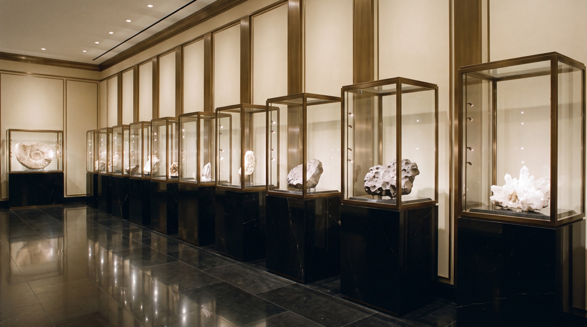

Наука как искусство: глубокое время, космос, экспертиза и коллекционирование. Мы пишем о том, что продаём, на уровне тех, кто это изучает.

Палласиты — граница ядра и мантии разрушенной протопланеты. Что именно мы держим в руках, когда держим метеорит Сеймчан.

Пять признаков подлинности, которые проверяет лаборатория дома, прежде чем объект получает номер Relictum.

Сто миллионов лет назад здесь охотился спинозавр. Дневник нашей осенней экспедиции в марокканскую Сахару.

Почему зуб в 16 сантиметров стоит в шестьдесят раз дороже зуба в 7 сантиметров — и как устроен рынок главного хищника океана.

От кунсткамер Медичи до приватных галерей: как устроена современная коллекция natural history и с чего её начать.

Трилобит Drotops до и после: почему главная ценность образца создаётся в лаборатории, а не в раскопе.
Раз в месяц: новые объекты до публикации, эссе журнала и приглашения в экспедиции.